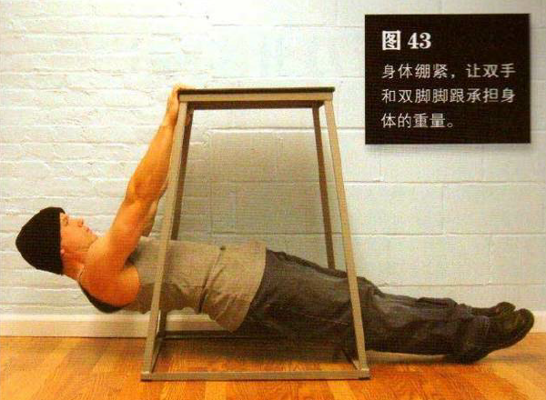
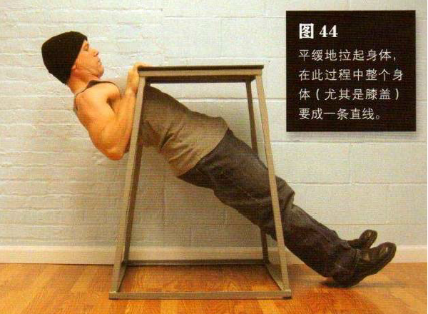

找一个至少与你的髋部等高、稳固且双手可抓握的水平物体。该物体要能安全地承载你的体重，又大又结实的桌子（如餐桌和书桌）通常是最佳之选。钻到桌子下面——胸部与下肢都位于桌子下面，抬手抓住桌子边缘（使用正握姿势）。理想情况是，双手与肩同宽，但这要取决于你用的是什么样的桌子。然后拉起身体，使背部离地，只有脚跟与地面接触。有时你的手臂可能需要适当弯曲才能使背部离地——这取决于桌子的高度。身体绷紧，让双手和双脚脚跟承担身体的重量。
然后平缓地拉起身体，在此过程中整个身体（尤其是膝盖）要成一条直线，直到胸部触到桌子边缘。这是该动作的结束姿势（图 44）。暂停一下，然后降低身体，回到起始姿势，如此重复。
初级标准：1 组，10 次
中级标准：2 组，各 20 次
高级标准：3 组，各 30 次